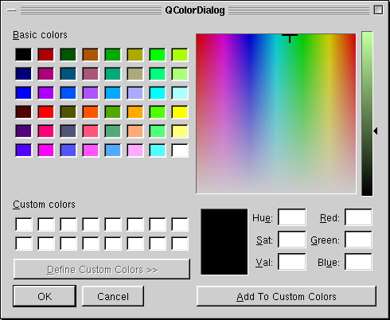

QColorDialog Class Reference
The QColorDialog class provides a dialog widget for specifying colors.
More...
#include <qcolordialog.h>
Inherits QDialog.
List of all member functions.
Static Public Members
Detailed Description
The QColorDialog class provides a dialog widget for specifying colors.
The color dialog's function is to allow users to choose colors.
For example, you might use this in a drawing program to allow the
user to set the brush color.
The static functions provide modal color dialogs.
The static getColor() function shows the dialog and allows the
user to specify a color. The getRgba() function does the same but
also allows the user to specify a color with an alpha channel
(transparency) value.
The user can store customCount() different custom colors. The
custom colors are shared by all color dialogs, and remembered
during the execution of the program. Use setCustomColor() to set
the custom colors, and use customColor() to get them.
 See also Dialog Classes and Graphics Classes.
Member Function Documentation
QRgb QColorDialog::customColor ( int i ) [static]
Returns custom color number i as a QRgb.
int QColorDialog::customCount () [static]
Returns the number of custom colors supported by QColorDialog. All
color dialogs share the same custom colors.
QColor QColorDialog::getColor ( const QColor & initial = white, QWidget * parent = 0, const char * name = 0 ) [static]
Pops up a modal color dialog, lets the user choose a color, and
returns that color. The color is initially set to initial. The
dialog is a child of parent and is called name. It returns
an invalid (see QColor::isValid()) color if the user cancels the
dialog. All colors allocated by the dialog will be deallocated
before this function returns.
Examples: chart/setdataform.cpp and scribble/scribble.cpp.
QRgb QColorDialog::getRgba ( QRgb initial, bool * ok = 0, QWidget * parent = 0, const char * name = 0 ) [static]
Pops up a modal color dialog to allow the user to choose a color
and an alpha channel (transparency) value. The color+alpha is
initially set to initial. The dialog is a child of parent
and called name.
If ok is non-null, *ok is set to TRUE if the user clicked
OK, and to FALSE if the user clicked Cancel.
If the user clicks Cancel, the initial value is returned.
void QColorDialog::setCustomColor ( int i, QRgb c ) [static]
Sets custom color number i to the QRgb value c.
void QColorDialog::setStandardColor ( int i, QRgb c ) [static]
Sets standard color number i to the QRgb value c.
This file is part of the Qt toolkit.
Copyright © 1995-2007
Trolltech. All Rights Reserved.